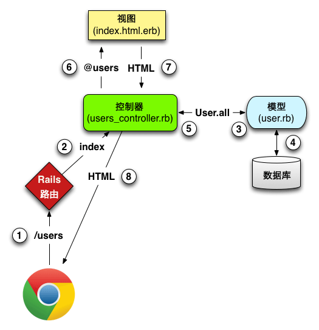

1.url是什么
url：Uniform Resource Locator 统一资源定位符，用于定位互联网上的资源
eg.
https://www.baidu.com
http://www.xxx.com
- 这些就是url的表现形式，第一部分https、http是协议，常见的还有file、ftp等
- 第二部分 www.xxx.com 是域名，每个域名对应一个ip地址，浏览器其实是通过ip地址找到网站的。每个处于互联网中的设备都有ip地址，形如192.168.0.1，域名的意义在于语义化地址，如果地址是一串数字的话就会很难记住，不方便访问。
2.域名解析
在url输入之后，浏览器会进行域名解析，将域名解析成ip地址，域名解析的流程如下：
- 浏览器缓存 - 浏览器会缓存DNS（Domain Name System 域名系统，因特网上作为域名和IP地址相互映射的一个分布式数据库，能够使用户更方便的访问互联网，而不用去记住能够被机器直接读取的IP数串）记录一段时间
- 系统缓存 - 从hosts文件查找是否有该域名和对应的ip。
- 路由器缓存 - 一般路由器也会缓存域名信息。
- ISP DNS缓存 - 比如到电信的DNS上查找缓存
- 如果都没有找到，则向根域名服务器（比如说.com根域名服务器）查找域名对应ip，根域名服务器把请求发送到下一级，直到找到ip
3.服务器处理
在历经上面步骤后，浏览器终于找到正确的地址，把我们的请求准确送到，由服务器端的web server来处理我们的请求。对于不同的请求，web
server会根据配置文件把不同的请求交给处理对应请求的程序处理，然后把程序处理的结果返回作为响应。
4.浏览器处理
浏览器接收到服务器返回的html字符串之后，会一句句将其解析。解析到link标签会重新发送请求获取css，解析到script标签会重新发送请求过去js，并执行代码，解析到img标签会发送请求获取图片。最后，浏览器根据html和css计算得到的渲染树，绘制到屏幕上，js被执行。
下图就完整的展现的这一过程

以上就是从url输入到页面展现的全过程。